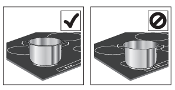

Istruzioni induzione
Sicurezza
- Non utilizzare il piano cottura se la superficie è incrinata.
- Non appoggiare oggetti sulle superfici di cottura.
- Sorvegliare sempre il processo di cottura, soprattutto con grassi e oli.
- Tenere i bambini lontani dal piano cottura.
Accensione e spegnimento
- Per accendere: premere il tasto di accensione per circa 1 secondo.
- Per spegnere: premere lo stesso tasto; tutte le zone di cottura si disattivano.
Uso quotidiano
- Selezione della zona di cottura: premere il tasto di selezione zona corrispondente.
- Regolazione della potenza: utilizzare i tasti + e - per regolare il livello di potenza da 1 a 9.
- Booster: alcune zone di cottura hanno la funzione di riscaldamento rapido (Booster), visualizzata con la lettera P.
- Disattivazione: per disattivare una zona di cottura, selezionarla e premere - fino a portare il livello a 0.

Blocco tasti
- Premere per 3 secondi il tasto My menu/Blocco tasti per bloccare i tasti e evitare attivazioni accidentali. Per disattivare, ripetere la procedura.
Timer
- Selezionare e attivare la zona di cottura desiderata, poi premere l'icona dell'orologio e
impostare il tempo con i tasti + e -.
Il timer inizierà il conto alla rovescia e spegnerà automaticamente la zona di cottura allo scadere del tempo.
Se riscontri problemi, contatta l'host, Alessandro.